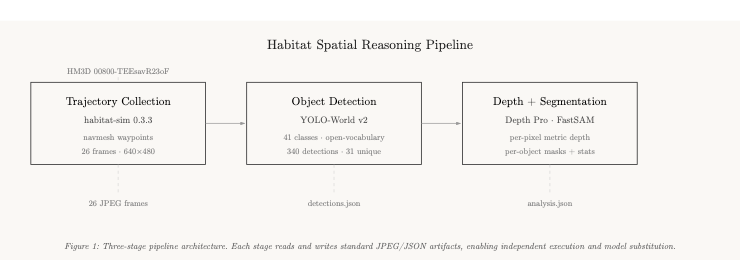

Habitat Spatial
Reasoning Pipeline
End-to-end egocentric perception on HM3D photorealistic scenes — trajectory collection, open-vocabulary detection, monocular depth estimation, and per-object spatial analysis.
Interview Task · Track 2: Spatial Reasoning · Prof. Sundeep Rangan, Director of NYU WIRELESS
Architecture
3-stage modular pipeline with JSON/JPEG interfaces between stages.

Stage 1: Trajectory
habitat-sim renders egocentric views at 1.5m eye height. Navmesh-constrained waypoints produce realistic walking paths through 398 m² of navigable space.
Stage 2: Detection
YOLO-World v2 open-vocabulary — 41 indoor classes via CLIP text encoder. Zero-shot: no retraining needed. 340 detections across 26 frames.
Stage 3: Analysis
Depth Pro estimates metric depth per pixel. FastSAM segments each detected object. Combined output: per-object depth μ/σ/min/max + mask area.
Results
All metrics measured on HM3D scene 00800-TEEsavR23oF — a 398 m², 2-floor, 7-room furnished residential space. Consumer hardware: Apple M1 Max.
Pipeline Demo

Per-Object Depth Analysis
| Object | Conf. | Mean Depth | Std | Range | Mask (px) |
|---|---|---|---|---|---|
| couch | 0.86 | 3.11m | 0.41 | 2.28–4.64m | 36,527 |
| ceiling | 0.50 | 3.92m | 0.56 | 2.35–6.11m | 67,403 |
| sofa | 0.44 | 4.59m | 0.36 | 3.54–5.69m | 2,676 |
| chair | 0.33 | 6.79m | 0.68 | 5.43–8.56m | 1,051 |
| floor | 0.35 | 4.39m | 2.10 | 2.95–14.66m | 14,646 |
Detection Performance by Frame
| Frame | Det. | Classes Found | Depth Range |
|---|---|---|---|
| 0000 | 12 | couch, ceiling, sofa, chair, wall, window, door, floor, pillow | 2.28–16.05m |
| 0001 | 23 | refrigerator, cabinet, ceiling, chair, clock, desk, mirror, oven, rug, sink, table, television, wall | 1.65–12.67m |
| 0003 | 11 | bed, ceiling, couch, lamp, pillow, plant, sofa, wall | 1.86–8.48m |
| 0010 | 20 | cabinet, ceiling, chair, curtain, desk, floor, lamp, mirror, oven, refrigerator, rug, sink, table, television, wall | — |
| 0025 | 23 | cabinet, ceiling, chair, desk, floor, oven, picture, pillow, rug, table, television, tv, wall, window | — |
Stage 1 · Trajectory Collection
habitat-sim 0.3.3 on Apple M1 Max · Metal/OpenGL rendering

Scene
HM3D minival 00800-TEEsavR23oF. 398 m², 2 floors, 7 rooms, furnished. Reviewer rating: 5/5.
Navigation
Navmesh-constrained waypoints. Random perturbation with directional walk heuristic produces natural exploration patterns.
Sensor
Pinhole RGB camera at 1.5m height, 90° HFOV. Quaternion rotation to look toward next waypoint. 640×480 output.
Output
26 JPEG frames + metadata.json with per-frame position and rotation. 20–30KB per frame.
Stage 2 · Object Detection
YOLO-World v2 · Open-vocabulary · 41-class indoor vocabulary
Model
yolov8s-worldv2.pt (24.7 MB). CLIP text encoder maps class names to visual features — no retraining needed for new object categories.
Vocabulary
41 indoor classes: furniture, fixtures, electronics, decorations. Configurable via --vocabulary flag.
Performance
340 detections across 26 frames. 31 unique classes. Mean 13.1 detections/frame at confidence 0.15.
Output
detections.json with per-frame bboxes, classes, confidence scores. Annotated JPEGs with bounding boxes drawn.
Detected Classes (31 total)
cabinet · ceiling · wall · couch · pillow · floor · window · chair ·
lamp · mirror · rug · door · sofa · table · curtain · desk ·
oven · picture · plant · refrigerator · sink · television · clock ·
book · bag · bottle · bowl · bed · person · tv · vase
Stage 3 · Depth + Segmentation + Analysis
Depth Pro (Apple) · FastSAM · Per-object statistics
Depth Pro
Apple monocular metric depth. 1.8 GB ViT-based model. Estimates real-world distances in meters from a single RGB frame — no stereo required.
FastSAM
Lightweight Segment Anything Model. Bounding box prompts from YOLO-World produce binary masks per object. Masks resized to match original frame resolution.
Analysis
Per-object depth statistics computed from mask × depth map intersection: mean, median, standard deviation, min, max, and pixel count.
Visualization
Side-by-side composites: original frame | depth map (Inferno) | annotated with per-object depth labels.
Depth Ranges by Frame
| Frame | Min Depth | Max Depth | Span | Notable Objects |
|---|---|---|---|---|
| 0000 | 2.28m | 16.05m | 13.77m | couch @ 3.11m, chair @ 6.79m |
| 0001 | 1.65m | 12.67m | 11.02m | refrigerator @ 5.39m, rug @ 3.83m |
| 0002 | 2.61m | 4.12m | 1.51m | narrow room — consistent depth |
| 0003 | 1.86m | 8.48m | 6.62m | bedroom with open doorway |
| 0004 | 1.12m | 9.11m | 7.99m | close to cabinet, open through room |
Setup & Reproducibility
Dual-environment architecture for dependency isolation.
Conda: habitat-sim
Python 3.9 · habitat-sim 0.3.3 · habitat-lab 0.3.3 · OpenCV · Pillow 10.4 · numpy 1.x
UV: ML Models
Python 3.12 · PyTorch 2.11 · YOLO-World · FastSAM · Depth Pro · CLIP · timm · numpy 1.26
One-Command Run
bash run_pipeline.shIndividual Stages
# Stage 1: Collect trajectory (conda env)
conda run -n habitat-sim python scripts/collect_trajectory.py --scene data/hm3d/minival/00800-TEEsavR23oF/TEEsavR23oF.basis.glb --frames 25
# Stage 2: Detect objects (uv venv)
source .venv/bin/activate && python scripts/detect_objects.py --confidence 0.15
# Stage 3: Depth + Segmentation + Analysis
python scripts/analyze_scene.py --max-frames 5
Full setup instructions and model download commands in README →
Known Limitations
Honest assessment of current pipeline constraints.
Depth Pro on CPU
5–10s per frame on M1 Max. Mitigation: batch overnight or enable MPS acceleration.
FastSAM 640px
Internal 640px resize causes mask edge artifacts. Nearest-neighbor rescale to original resolution is a rough approximation.
No Temporal Tracking
Objects re-detected each frame with no persistent IDs. Adding Hungarian matching + Kalman filter would enable object trajectories.
Textureless Surfaces
YOLO-World produces near-zero detections on blank walls. Expected for geometric test scenes; HM3D has full texture coverage.
Thin Structures
Chair legs, lamp cords, and railings are sub-10px features below SAM's segmentation threshold.
Monocular Depth Ambiguity
Scale/distance tradeoff at object boundaries. Multi-view consistency would improve with denser trajectory sampling.
References
AI Habitat
aihabitat.org — Facebook AI Research simulation platform for embodied AI.
HM3D Dataset
HM3D v0.2 — Habitat-Matterport 3D Research Dataset. 1,000+ scenes.
YOLO-World
CVPR 2024 — Real-Time Open-Vocabulary Object Detection. Tencent AI Lab.
NanoSAM
NVIDIA AI-IOT — Lightweight SAM for Jetson edge deployment.
Depth Pro
Apple ML Research — Sharp Monocular Metric Depth in Less Than a Second.
FastSAM
ICCV 2023 — Fast Segment Anything. CASIA-IVA-Lab.
View on GitHub · Architecture Diagram · Scene 00800-TEEsavR23oF